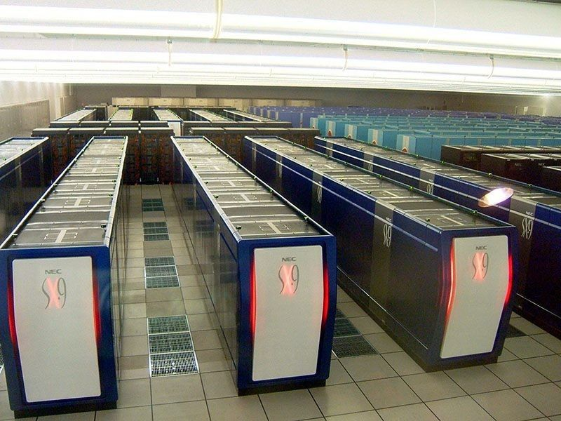

supercomputer earth simulator
The Earth Simulator, launched in 2002, was a groundbreaking supercomputer designed primarily for climate and weather simulations. Developed by NEC and other partners, it aimed to improve understanding of global climate systems and predict environmental changes. With its impressive processing power, the Earth Simulator could perform complex simulations that were previously impossible, making significant contributions to fields like meteorology, oceanography, and environmental science. Its architecture, based on vector processing, set new standards in high-performance computing and influenced subsequent developments in supercomputing technology.